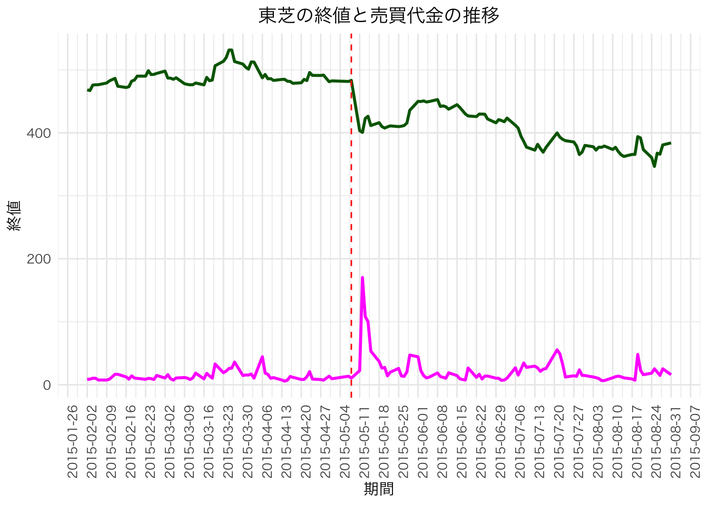
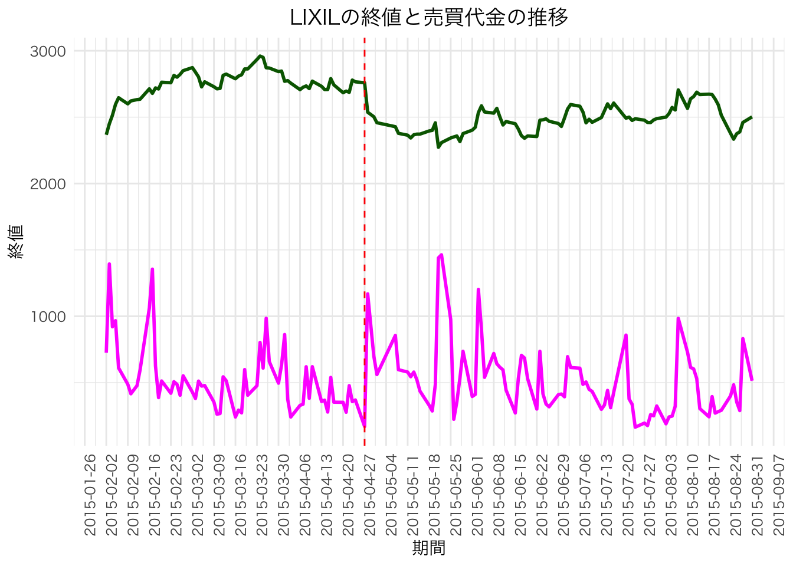

8 市場の効率性
市場の効率性(market efficiency)
8.1 1. 市場の効率性の定義
現実のマーケットが理論(期待効用最大化原理，あるいはCAPM)どおりに機能していることを市場が効率的であるという。 市場が効率的であるという仮説を，効率的市場仮説(Efficient Market Hypothesis: EMH)とよぶ。
効率的市場の定義
効率的な市場とは，全ての金融資産の市場価格が常にその投資価値に等しい市場であることを指す。
この章での市場の効率性とは，主として，価格に金融資産に関する情報が繁栄されている(価格(情報)の効率性)に重点を置く。 資源配分の効率性が実現されている（資源配分の効率性）を表すとは限らない。
8.2 2. 3つの情報の効率性
情報の効率性の定義
市場がある情報に関して効率的であるとは，その情報に基づいた投資戦略をどのように策定しても，過大な投資収益率を平均的に稼ぐことができない(裁定機会がない)ことを言う。
すなわち，資産価格には，あらゆる情報が集約されている！
Weak型の効率性
過去の資産価格に基づいた投資戦略をどのように策定しても，過大な投資収益率を平均的に稼ぐことができない。Semi-strong型の効率性
公開情報(過去の資産価格も含めて)に基づいた投資戦略をどのように策定しても，過大な投資収益率を平均的に稼ぐことができない。Strong型の効率性
公開情報，一部の人しか知りえない内部情報(インサイダー情報)に基づいた投資戦略をどのように策定しても，過大な投資収益率を平均的に稼ぐことができない。
8.3 3. 市場の効率性と期待リターン
効率的市場の命題は，市場が効率的であるならば，(条件付)期待リターンが次式で決定される。
\mathbb{E}[r_i \mid I ] = r_f + \beta_1 (r_M - r_f)
この式が成立するように，資産価格(P_{t,i})は調整される。 ここで，I は時点tで利用可能な情報集合を，\mathbb{E}[r_i \mid I] はt時点の情報 I に基づいて予測される金融資産の期待リターン， r_f + \beta_i (r_M - r_f) はCAPMによって表現される理論上の期待リターンを表す。
3つの効率性が想定する情報集合 I は以下の通りである。
Weak型の効率性
I = \{ P_{-1,i}, P_{-2,i}, \dots\}Semi-strong型の効率性
I = \{ P_{-1,i}, P_{-2,i}, \dots, X_{-1,i} , X_{-2,i}, \dots \}
X_{-k,i} としては，過去の利益やライバル企業の株価など。Strong型の効率性
I = \{ P_{-1,i}, P_{-2,i}, \dots, X_{-1,i} , X_{-2,i}, \dots , Z_{-1,i}, Z_{-2,i}, \dots \}
Z_{-k,i} としては企業内部者しか知らないインサイダー情報など。
8.4 Semi-strong型の効率的市場仮説
現時点で利用可能な公開情報 I は完全に資産価格 P_i に繁栄されるので，資産価格に影響するのは，公開されていない情報の追加である。 追加的な情報が公開された以降では資産価格は変化しない。
具体例
増益(減益)，増配(減配・無配)， 増資(減資，自社株買い)，株式分割， M&A，etc，に予想されていない情報が含まれているとき，公開日に株価(リター ン)が変化する。
情報は証券価格にどのように織り込まれるのか？
- 瞬時に(完全に)織り込まれるのか？
- 時間をかけて織り込まれるのか？
1 のとき効率的市場仮説が成立している。
自社株買いのケース
投資家は優良な企業か否かわからない。 一方，企業は自分がどういう企業か知っている。 「自社株買いをするのは，その企業にとって，その資産が有益な投資資産であるからである。」(詳細な理由は省略)：砂川先生のコーポレート・ファイナンスを参照したがって，もし「 」の話が本当であるならば，自社株買いの発表(情報の公開)があった後で，株価は上昇する。さらに，Semi-strong 型の効率的市場仮説が成立しているならば，図1のようになるはず。
実際はどうなのか，確認してみましょう。 東芝の会計処理の適正性について第三者委員会の設置がアナウンスされた2015年5月7日と，LIXILの会計処理の適正性について監査人及び法律顧問による特別監査の導入がアナウンスされた2015年4月27日周辺の株価(終値)と売買代金の推移を確認する。
pacman::p_load(tidyverse, scales)
df <- read_csv("data/lixil_toshiba_stock.csv")
df <- df |>
select(期間,銘柄名称,終値,売買高)toshiba_scale <- 10**9 # 売買代金のスケーリング係数
df_toshiba <- df |>
filter(銘柄名称 == "東芝") |>
mutate(
売買代金 = 終値 * 売買高 / toshiba_scale
)
df_toshiba |> head()# A tibble: 6 × 5
期間 銘柄名称 終値 売買高 売買代金
<date> <chr> <dbl> <dbl> <dbl>
1 2015-02-02 東芝 468. 18145000 8.50
2 2015-02-03 東芝 467. 18872000 8.82
3 2015-02-04 東芝 476. 21558000 10.3
4 2015-02-05 東芝 476. 21505000 10.2
5 2015-02-06 東芝 476. 15788000 7.52
6 2015-02-09 東芝 479. 15478000 7.42df_toshiba |>
ggplot(aes(x = 期間)) +
geom_line(aes(y = 終値), color = "darkgreen", size = 1) +
geom_line(aes(y = 売買代金), color = "magenta", size = 1) +
geom_vline(xintercept = as.Date("2015-05-08"), linetype = "dashed", color = "red") +
scale_x_date(
date_breaks = "1 week", # 1週間ごとに目盛り
date_labels = "%Y-%m-%d" # ラベル形式（年-月-日）
) +
labs(x = "期間", title = "東芝の終値と売買代金の推移") +
# 日本語フォントの指定
theme_minimal() +
theme(
text = element_text(family = "HiraKakuProN-W3"),
plot.title = element_text(hjust = 0.5),
# x軸を90度回転
axis.text.x = element_text(angle = 90, hjust = 1)
)
scale_factor <- 10**7 # 売買代金のスケーリング係数
df |>
filter(銘柄名称 == "LIXIL") |>
mutate(
期間 = as.Date(期間),
売買代金 = 終値 * 売買高 / scale_factor
) |>
ggplot(aes(x = 期間)) +
geom_line(aes(y = 終値), color = "darkgreen", size = 1) +
geom_line(aes(y = 売買代金), color = "magenta", size = 1) +
geom_vline(xintercept = as.Date("2015-04-27"), linetype = "dashed", color = "red") +
scale_x_date(
date_breaks = "1 week", # 1週間ごとに目盛り
date_labels = "%Y-%m-%d" # ラベル形式（年-月-日）
) +
labs(x = "期間", title = "LIXILの終値と売買代金の推移") +
theme_minimal() +
theme(
text = element_text(family = "HiraKakuProN-W3"),
plot.title = element_text(hjust = 0.5),
# x軸を90度回転
axis.text.x = element_text(angle = 90, hjust = 1)
)